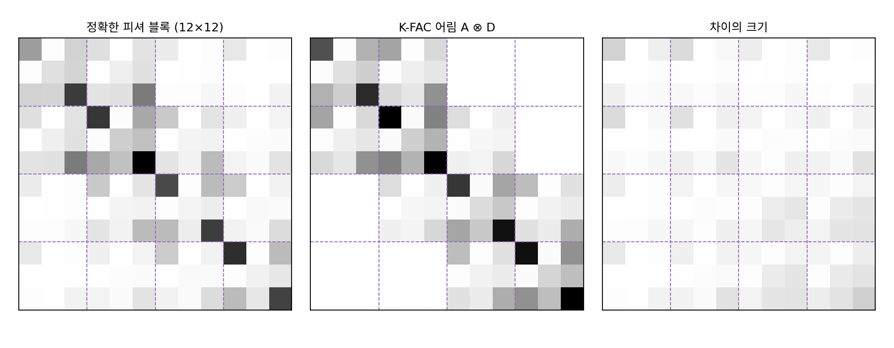
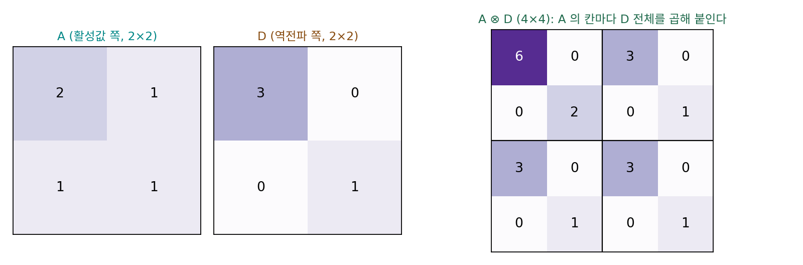
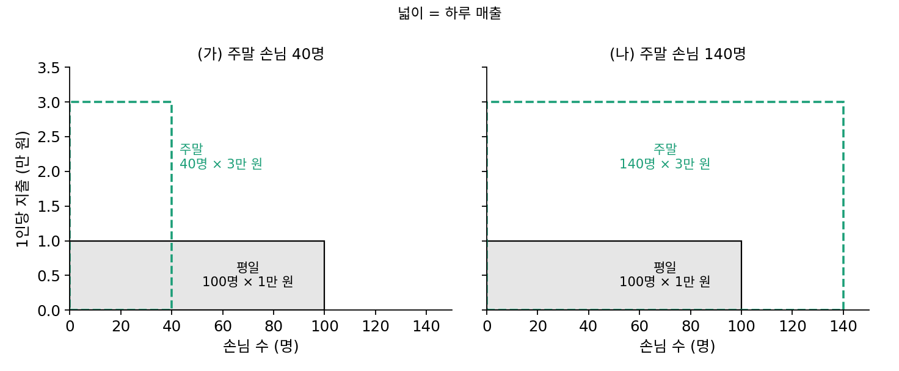
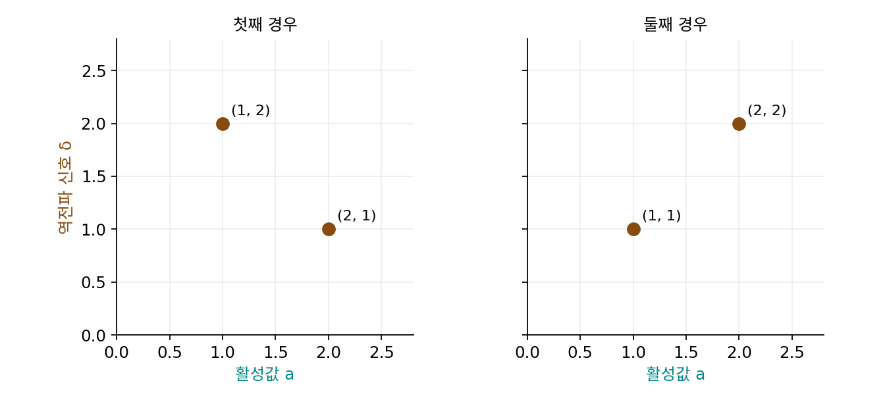
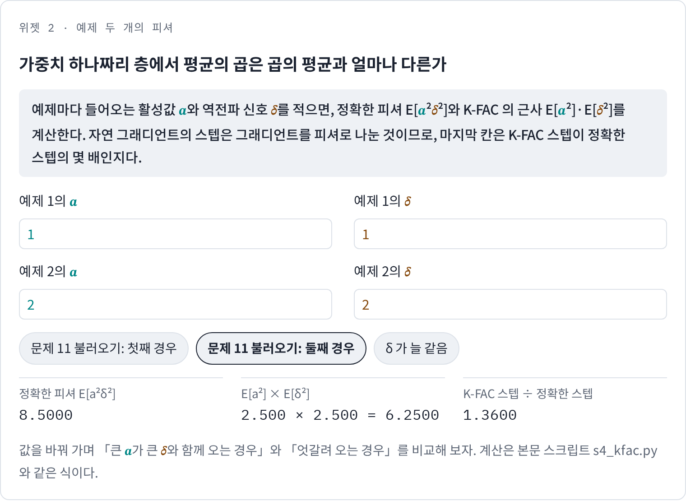
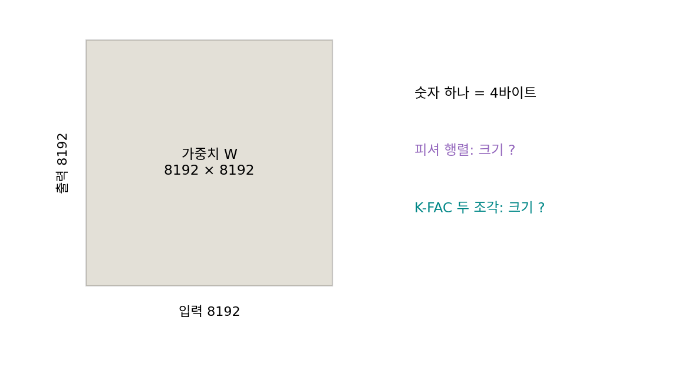

K-FAC: 층의 피셔를 두 작은 행렬의 크로네커 곱으로
피셔 행렬을 그대로 쓸 수 없다면 무엇을 버릴까? 가장 먼저 떠오르는 것은 층과 층 사이의 칸인데, 한 층 안의 가중치끼리의 얽힘만 남기면 피셔는 층마다 한 덩어리씩인 블록이 된다. 그래도 입력과 출력이 모두 4096인 층 하나의 가중치는 1,678만 개이고, 그 블록은 가중치 수의 제곱인 약 2.8 × 10¹⁴칸이다. 블록 하나도 여전히 너무 큰데, 이 블록을 더 작은 무엇으로 적을 수는 없을까?
역사: 「아마 정확해지지 않을 큰 근사」
토론토 대학교의 제임스 마턴스와 로저 그로스(Roger Grosse)는 2015년 국제 기계학습 학회(ICML)에 낸 「크로네커 곱으로 나눈 근사 곡률로 신경망 최적화하기」에서 층의 피셔 블록을 두 작은 행렬로 쪼갰다. 한 층의 그래디언트는 들어오는 활성값과, 그 층의 출력으로 거꾸로 전해진 신호의 곱이다. 피셔 블록은 그 곱의 곱을 평균한 것인데, 그들은 이것을 「활성값끼리의 평균」과 「역전파 신호끼리의 평균」의 곱으로 바꿔 놓았다. 그들은 이 바꿔치기를 두고 「곱의 기댓값은 일반적으로 기댓값의 곱이 아니므로 이것은 정말 큰 근사이고, 어떤 현실적인 가정 아래서도 정확해지지 않을 것」이라고 스스로 적었다. 그래도 16 × 16으로 줄인 손글씨 숫자(MNIST)를 분류하는 작은 망(입력 256, 은닉층 다섯 개에 뉴런 20개씩, 출력 10)의 가운데 네 층에서 정확한 피셔와 근사를 나란히 그려 보니, 근사가 피셔의 「굵은 짜임」을 잡고 있었다. 아래 그림은 이 책이 정확한 피셔와 근사를 나란히 그리는 일을 더 작은 망에서 다시 해 본 것이다.


스스로 「정확해지지 않을 것」이라고 적은 근사를 논문으로 냈다는 게 이상해요. 수학 수업에서 그렇게 쓰면 증명이 안 되는 거잖아요.

증명 대신 그림으로 확인했죠. 그런데 그 확인에 쓴 망이 왜 뉴런 20개짜리 작은 망이었을까요?

정확한 피셔를 그려야 하니까요… 가운데 층 하나가 20 × 20 = 400개 가중치(편향은 빼고)면 피셔 블록은 400 × 400, 16만 칸이에요. 층이 4096짜리면 블록 하나가 2.8 × 10¹⁴칸이라고 했으니 그릴 수도 없네요.

그래요. 근사가 필요한 큰 망에서는 정확한 값을 구할 수 없으니 맞대 볼 수가 없어요. 맞대 볼 수 있는 가장 작은 망에서 「굵은 짜임」이 맞는지만 본 거예요.

그래도 곱의 평균을 평균의 곱으로 바꾸는 건 일반적으로 틀린 식이잖아요.
틀린 식이 어느 칸을 맞히고 어느 칸을 놓치는지는 위 그림에서 볼 수 있죠.

그 전에 궁금한 게 있어요. 활성값끼리의 평균과 역전파 신호끼리의 평균은 둘 다 작은 행렬인데, 둘을 「곱」해서 어떻게 원래 블록만 한 큰 행렬이 나와요?
2 × 2 두 장으로 4 × 4 한 장 만들기
크로네커 곱(한 행렬의 칸마다 다른 행렬 전체를 곱해 큰 블록 행렬을 만드는 곱)은 손으로 한 번 해 보면 금방 익는다. 입력 둘, 출력 둘인 층을 생각하자. 가중치는 4개이고 피셔 블록은 4 × 4다. 활성값 쪽 행렬 A = [[2, 1], [1, 1]], 역전파 쪽 행렬 D = [[3, 0], [0, 1]]이라 하면, A의 첫 칸 2에 D 전체를 곱한 [[6, 0], [0, 2]]가 왼쪽 위 덩어리가 되고, 나머지 칸 1, 1, 1도 같은 식으로 덩어리가 된다.

이 꼴은 두 성질 덕분에 값진데, 첫째는 크로네커 곱의 역이 역의 크로네커 곱이라는 것이다. 4 × 4의 역을 구하는 대신 2 × 2 둘의 역 A⁻¹ = [[1, −1], [−1, 2]]와 D⁻¹ = [[1/3, 0], [0, 1]]만 구하면 된다. 둘째, 그래디언트 행렬 V(출력 × 입력)를 한 줄로 펼쳐 4 × 4 행렬로 풀어 얻은 스텝은 D⁻¹VA⁻¹, 곧 작은 행렬을 양쪽에서 곱한 것과 같다. V = [[1, 2], [0, −1]]로 해 보면 4 × 4를 풀어도, 양쪽에서 곱해도 [[−1/3, 1], [1, −2]]가 나온다.
이렇게 층마다 피셔 블록을 활성값 쪽과 역전파 쪽 두 작은 행렬의 크로네커 곱으로 근사하고, 그래디언트 행렬의 양쪽에 두 행렬의 역을 곱해 걷는 방법을 K-FAC (크로네커 곱으로 나눈 근사 곡률 / Kronecker-factored approximate curvature)이라 한다. 입력 m개, 출력 n개인 층이면 (mn)²칸 대신 m² + n²칸만 저장한다. 위 그림의 작은 망에서는 블록이 12 × 12 = 144칸, 두 조각이 4² + 3² = 25칸이다. 무작위 그래디언트 1,000개로 재 보니 K-FAC 스텝과 정확한 자연 그래디언트 스텝 사이의 코사인(방향이 같으면 1)은 평균 0.790, 그냥 그래디언트와 정확한 자연 그래디언트 사이는 0.569였다. 블록 전체의 상대 차이는 38%로 작지 않지만, 스텝의 방향은 그냥 그래디언트보다 훨씬 많이 바로잡는다.
ML에서: 대규모 학습의 K-FAC
K-FAC 은 두 조각 A와 D를 스텝마다 지수이동평균으로 고쳐 두고, 역은 수십 스텝에 한 번만 다시 구하는 식으로 쓴다. 두 조각을 만들려면 층마다 활성값과 역전파 신호를 따로 모아야 하므로, 완전 연결층 말고도 합성곱층이나 어텐션처럼 층의 모양이 바뀔 때마다 무엇을 활성값으로, 무엇을 역전파 신호로 볼지 새로 정해야 한다. 이 수고가 다음 개념이 덜어 내려는 것이다.
문제 10. 평균 손님 × 평균 지출
작은 가게의 하루 매출은 손님 수 × 1인당 지출로, 평일 하루는 손님 100명이 1만 원씩, 주말 하루는 손님 40명이 3만 원씩 쓴다. (가) 평일 하루와 주말 하루의 평균 매출을 정확히 구하고, 「평균 손님 수 × 평균 지출」로 계산한 근삿값과 비교하라. (나) 주말에 손님이 140명으로 늘고 지출은 3만 원 그대로라면 어떻게 되는가?

(가)는 정확한 값이 (100 + 120)/2 = 110만 원이야. 손님 평균 70명, 지출 평균 2만 원이라 근삿값은 140만 원이고. 근삿값이 30만 원 더 커.

(나)는 정확한 값이 (100 + 420)/2 = 260만 원이고 근삿값은 120 × 2 = 240만 원이야. 이번엔 근삿값이 작네.
(가)에서는 크고 (나)에서는 작아? 뭐가 달라진 거지?
두 경우에 손님이 많은 날의 지출은 어땠나요?

(가)는 손님 많은 평일에 지출이 적고, (나)는 손님 많은 주말에 지출도 많아요. 두 값이 함께 움직이는 쪽이 근삿값이 틀리는 쪽을 정하네요. 곱의 평균이 평균의 곱에 공분산을 더한 거라서, 둘이 따로 놀 때만 맞고요.

(가)는 공분산이 음수라 정확한 값이 근삿값보다 작고, (나)는 양수라 커진 거네요. 평균끼리 곱하면 어느 쪽으로 틀릴지는 공분산의 부호를 봐야 알겠어요.
문제 11. K-FAC 의 스텝은 크게 틀리는가 작게 틀리는가
가중치 하나짜리 층을 생각한다. 그 가중치의 피셔는 E[a²δ²]이고(a는 들어오는 활성값, δ는 역전파 신호), K-FAC 은 이것을 E[a²]·E[δ²]로 근사한다. (가) 두 예제의 (a, δ)가 (1, 2), (2, 1)일 때와 (1, 1), (2, 2)일 때 정확한 피셔와 K-FAC 의 근삿값을 구하라. (나) 자연 그래디언트의 스텝은 그래디언트를 피셔로 나눈 것이다. 두 경우에 K-FAC 의 스텝은 정확한 자연 그래디언트 스텝의 몇 배인가? (다) 어느 경우가 학습을 위험하게 만드는가? (풀어 본 뒤 위젯 2의 「문제 11 불러오기」로 확인해 보자.)

(가)는 손님과 지출 문제랑 같은 계산이야. 첫째 경우 정확한 값은 (1·4 + 4·1)/2 = 4, 근삿값은 E[a²] = 2.5, E[δ²] = 2.5라서 6.25. 둘째 경우는 정확한 값 (1 + 16)/2 = 8.5, 근삿값은 그대로 6.25.
첫째 경우는 K-FAC 피셔가 실제보다 크니까 스텝도 실제보다 크겠네요. 큰 피셔면 큰 스텝이요.
자연 그래디언트 식에서 피셔는 그래디언트에 곱해져요, 나눠져요?

역행렬이니까 나눠지죠… 아, 거꾸로네요. 피셔를 크게 추정하면 스텝은 작아져요. 첫째 경우 4/6.25 = 0.64배, 둘째 경우 8.5/6.25 = 1.36배.
1.36배면 스텝이 실제 눈금보다 36% 커지는 거네. 그럼 위험한 건 둘째 경우야. 첫째 경우는 스텝이 줄어서 느려질 뿐이고.
둘째는 (1, 1), (2, 2)잖아. 큰 활성값이 큰 역전파 신호랑 같이 온 경우네.
응. 매출 문제에서 손님 수와 지출이 같이 움직이면 근삿값이 작게 나왔던 것과 같은 방향이야.
그래서 K-FAC 의 독립 가정은 「대충 맞는다」로 끝나는 말이 아니에요. 어느 쪽으로 틀리는지가 두 신호의 관계에 달려 있어요.
위젯 2에서 문제 11의 둘째 경우를 불러와 계산이 맞는지 보고, 첫째 경우 단추로 바꾸면 마지막 칸이 어떻게 달라지는지도 확인해 보세요.

문제 12. 폭 8192 층 하나의 피셔
입력과 출력이 모두 8192인 층 하나를 생각하고, 숫자 하나를 4바이트(32비트 부동소수점)로 저장한다고 하자. (가) 이 층의 파라미터 수, 피셔 행렬의 칸 수, 그 피셔를 저장하는 데 드는 바이트 수를 구하라. (나) K-FAC 의 두 조각을 저장하는 데는 얼마가 드는가? (다) n × n 행렬의 역을 구하는 계산이 대략 n³에 비례한다면, 피셔 전체의 역과 두 조각의 역은 몇 배 차이인가?

파라미터는 8192² = 6,711만 개요. 피셔도 가중치랑 같은 8192 × 8192 행렬이니까 6,711만 칸, 4바이트면 268 MB. GPU 에 충분히 들어가는데요.
피셔의 칸 하나는 무엇과 무엇의 짝을 적어요?
파라미터 하나와 파라미터 하나의 짝이요… 그럼 파라미터 수의 제곱이네요. 6,711만² ≈ 4.5 × 10¹⁵칸, 4바이트면 1.8 × 10¹⁶바이트, 18페타바이트예요. 저장부터 안 돼요.
K-FAC 두 조각은 활성값 쪽 8192 × 8192와 역전파 쪽 8192 × 8192라서 1억 3,422만 칸, 537 MB야. (다)는 피셔 전체가 (8192²)³ = 8192⁶이고 두 조각이 2 × 8192³이니까 비가 8192³/2 ≈ 2.7 × 10¹¹배.
피셔는 가중치의 모양이 아니라 가중치 「짝」의 모양이었어. K-FAC 은 그 짝을 활성값 쪽과 역전파 쪽 두 조각의 곱으로 접어서 다시 가중치 크기 둘로 줄인 거고.